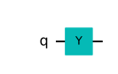
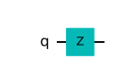
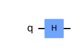
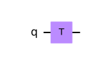
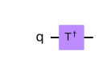
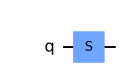
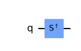

| Operator | Symbol | Matrix | Bloch-Sphere Rotation | |
| Pauli-X |
| \(\begin{bmatrix} 0&1\\1&0 \end{bmatrix}\)
|  | |
| Pauli-Y |  | \(\begin{bmatrix} 0&-i\\i&0 \end{bmatrix}\) |  | |
| Pauli-Z |  | \(\begin{bmatrix} 1&0\\0&-1 \end{bmatrix}\) |  | |
| Hadamard |  | \( \frac{1}{\sqrt{2}}\begin{bmatrix} 1&1\\1&-1 \end{bmatrix}\) |  | |
| T-Gate |  | \( \begin{bmatrix} 1&0\\0&e^{\frac{i\pi }{4}} \end{bmatrix}\) |  | |
| T-Dagger-Gate |  | \( \begin{bmatrix} 1&0\\0&e^{-\frac{i\pi }{4}} \end{bmatrix}\) |  | |
| S-Gate |  | \( \begin{bmatrix} 1&0\\0&e^{\frac{i\pi }{2}} \end{bmatrix}\) |  | |
| S-Dagger-Gate |  | \( \begin{bmatrix} 1&0\\0&e^{-\frac{i\pi }{2}} \end{bmatrix}\) |  | |